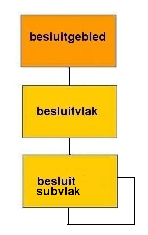
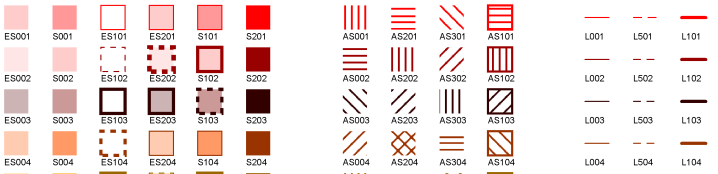

1. Inleiding
De Praktijkrichtlijn Algemene Maatregel van Bestuur (PRAMvB2012) is een toelichting op het
Informatiemodel Ruimtelijke Ordening (IMRO2012) voor wat betreft deze besluiten. In dit
hoofdstuk wordt de achtergrond van de praktijkrichtlijn aangegeven, evenals de
strekking van de standaard.
1.1 Aanleiding
In Wet ruimtelijke ordening (Wro) en het Besluit ruimtelijke ordening (Bro)
is vastgelegd dat planologische visies, plannen, besluiten, verordeningen en
algemene maatregelen van bestuur en onderliggende ministeriële regelingen
digitaal vervaardigd en op elektronische wijze beschikbaar gesteld moeten
worden. Om dit mogelijk te maken zijn de RO Standaarden ontwikkeld. Deze verplichte RO Standaarden, vastgelegd met de Regeling
standaarden ruimtelijke ordening, zijn:
IMRO2012 is normstellend voor de codering van ruimtelijke instrumenten. IMRO2012
is van belang voor applicatiebouwers en als referentie voor andere IMRO2012
gerelateerde documenten. IMRO2012 wordt beschreven zonder in te gaan op de
praktische toepassing van het model voor het coderen van digitale ruimtelijke
instrumenten. Alle voor dit toepassingsdoel benodigde informatie is opgenomen in
toelichtingen, deze praktijkrichtlijnen:
De STRI2012 is ook in praktijkrichtlijn nader toegelicht:
Praktijkrichtlijn Toegankelijkheid Ruimtelijke Instrumenten (PRTRI2012).
De standaard voor planteksten (IMROPT2012) is onder voorwaarde verplicht.
Toepassing van IMROPT2012 is verplicht wanneer de bronhouder ervoor kiest de
planteksten in objectgerichte vorm (XML) beschikbaar te stellen. Dit is nader toegelicht:
Praktijkrichtlijn voor Planteksten (PRPT2012).
Dit document betreft de Praktijkrichtlijn Algemene Maatregel van
Bestuur (PRAMvB2012). Als uitgangspunt voor deze praktijkrichtlijn worden alle
gegevens beschouwd die in de vorm van een Algemene Maatregel van
Bestuur (AMvB) of Ministeriële Regeling (MR)worden vastgesteld. Op basis van deze
praktijkrichtlijn kan te allen tijde vanuit de gegevensset de inhoud van de
oorspronkelijke algemene maatregel van bestuur of ministeriële regeling worden
geraadpleegd. Daarmee wordt de volledige digitale representatie van een algemene
maatregel van bestuur of ministeriële regeling vastgelegd.
De AMvB of MR is een instrument waarmee door de minister van het ministerie van
Binnenlandse Zaken & Koninkrijksrelaties (BZK) of de minister die verantwoordelijk is
voor het desbetreffende beleidsterrein in overeenstemming met de minister van BZK regels kunnen worden
gegeven omtrent de inhoud van bestemmingsplannen en provinciale
inpassingsplannen, daaraan voorafgaande projectbesluiten en van
beheersverordeningen, al dan niet voor een daarbij aangegeven gedeelte van het
land.
1.2 Context
Deze praktijkrichtlijn is een toelichting op het Informatie Model Ruimtelijke
Ordening (IMRO2012) en is een uitwerking voor de ruimtelijke instrumenten AMvB
en ministeriële regeling. Onder de hierna genoemde AMvB wordt ook de
ministeriële regeling bedoeld.
Naast de voorliggende praktijkrichtlijn is sprake van andere praktijkrichtlijnen
en standaarden die in samenhang zijn ontwikkeld in de context van de Wro. De
praktijkrichtlijnen voor de gebiedsgerichte besluiten (PRGB2012) en de
provinciale verordening (PRPV2012) zijn onderdelen van de RO Standaarden die
nauw aansluiten op deze praktijkrichtlijn. Alle drie zijn een toelichting op het
Informatie Model Ruimtelijke Ordening (IMRO2012).
Hieronder wordt een aantal relevante aspecten genoemd en daarvan de globale
context in relatie tot praktijkrichtlijnen, de voorliggende in het bijzonder,
genoemd.
Wet ruimtelijke ordening (Wro)
In de Wro wordt aangegeven dat nadere regels kunnen worden gesteld omtrent de
vormgeving en inrichting van een AMvB. In het Besluit ruimtelijke ordening zijn
die uitgewerkt.
Besluit ruimtelijke ordening (Bro)
Het Bro legt vast dat een AMvB in elk geval bevat een geometrische
plaatsbepaling van het gebied waarop de visie betrekking heeft. Daarmee wordt
het belang van de voorliggende praktijkrichtlijn, die de wijze van elektronisch
(digitaal) vastleggen bepaalt, evident.
Regeling standaarden ruimtelijke ordening (Rsro)
Deze ministeriële regeling noemt de feitelijke standaarden die basis moeten zijn
voor het vormgeven, inrichten en beschikbaar stellen van ruimtelijke
instrumenten. Dit zijn de RO standaarden 2012.
Informatiemodel Ruimtelijke Ordening (IMRO2012)
In de Rsro is bepaald dat bij de digitalisering van ruimtelijke instrumenten
gebruik moet worden gemaakt van IMRO2012. Dit informatiemodel is de standaard
voor de beschrijving en codering van ruimtelijke instrumenten. IMRO2012 is
gebaseerd op het Basismodel Geo-Informatie (NEN3610: 2011, en herziening 2022). Dit Basismodel
kent een aantal objectklassen en attributen waarmee aan het aardoppervlak
gerelateerde ruimtelijke objecten kunnen worden gecodeerd. IMRO2012 gebruikt
slechts één van deze objectklassen, namelijk PlanologischGebied.
Met IMRO wordt de inhoud (representatie van de werkelijkheid) digitaal
vastgelegd. De gebruiker van het bestand bouwt zelf de door hem gewenste
verbeelding op. Deze verbeelding kan dus een andere presentatie zijn van
dezelfde gegevens. De bronhouder kan door middel van een symboolcodelijst die
bij de RO Standaarden 2012 beschikbaar is wel aangeven hoe de AMvB en andere
vormvrije plannen digitaal kan worden weergegeven. Voor de analoge verbeelding
is geen standaard of richtlijn binnen de RO Standaarden aanwezig.
Standaard Toegankelijkheid Ruimtelijke Instrumenten (STRI2012)
Conform Wro en Bro wordt een AMvB met de daarbij behorende toelichting in
digitale geautoriseerde bronbestanden vastgelegd en in die vorm vastgesteld. De
STRI2012 beschrijft hoe de beschikbaarstelling van ruimtelijke instrumenten
gerealiseerd dient te worden en gaat onder meer in op naamconventies en het
digitaal waarmerken van de elektronisch te publiceren dataset. Bij de STRI2012
behoort de toelichting Praktijkrichtlijn Toegankelijkheid Ruimtelijke
Instrumenten (PRTRI2012).
Standaard voor planteksten (IMROPT)
De standaard voor planteksten moet onder voorwaarde verplicht worden gebruikt.
Toepassing van IMROPT2012 is verplicht wanneer de bronhouder ervoor kiest de
planteksten in objectgerichte vorm (XML) beschikbaar te stellen. De bronhouder
mag er ook voor kiezen de planteksten in de vorm van HTML en PDF bestanden
beschikbaar te stellen. IMROPT is in dit geval dan niet van toepassing.
IMROPT2012 wordt toegelicht in de Praktijkrichtlijn voor Planteksten (PRPT2012).
Gebruik van PDF-bestanden
Indien er PDF-bestanden worden gebruikt in een planset dan is het beter om PDF-
bestanden te gebruiken die geen flashcomponenten bevatten. Bestanden met
flashcomponenten kunnen om veiligheidsredenen niet meer in een webbrowser worden
geopend waardoor de PDF-bestanden bij raadpleging van Ruimtelijkeplannen.nl geen
inhoud bevatten.
Controleer daarom vóór publicatie dat uw PDF-documenten geen Flashcomponenten
bevatten.
Styled Layer Descriptor (SLD)
Een Styled Layer Descriptor beschrijft in een xml structuur de vormgeving van de
symbolen zoals die toegepast kan worden bij geografische data. Voor de AMvB en
andere vormvrije plannen is een bij de RO Standaarden 2012 behorende
symboolcodelijst (in SLD formaat) beschikbaar die aangeeft op welke wijze een
digitale verbeelding kan worden weergegeven.
Praktijkrichtlijn
In een praktijkrichtlijn wordt de methode van digitalisering van ruimtelijke
instrumenten beschreven. De praktijkrichtlijn stoelt geheel op de in de Regeling
standaarden ruimtelijke ordening vastgelegde RO standaarden. De
praktijkrichtlijn is te beschouwen als een toelichting op en nadere uitwerking
van de RO standaarden. Voor de algemene maatregel van bestuur en ministeriële
regeling is dit deze Praktijkrichtlijn Algemene Maatregel van Bestuur
(PRAMvB2012).
de AMvB (algemene maatregel van bestuur): artikel 4.3 Wro
De AMvB is een instrument waarmee door de minister van BZK of door de minister
verantwoordelijk voor het desbetreffende beleidsterrein in overeenstemming met
de minister van BZK regels kunnen worden gegeven omtrent de inhoud van
bestemmingsplannen en provinciale inpassingsplannen, daaraan voorafgaande
projectbesluiten en van beheersverordeningen, al dan niet voor een daarbij
aangegeven gedeelte van het land.
de ministeriele regeling
Een ministeriële regeling (mr) is een regeling die door een of meer ministers
wordt gemaakt. Niet alle regels worden in een AMvB neergelegd. Vaak staat in een
AMvB dat de verdere uitwerking van die AMvB is opgenomen in een mr.
1.3 Leeswijzer
De voorliggende praktijkrichtlijn gaat in hoofdstuk 2 in op aard en karakter van
de AMvB en mr in de context van het informatiemodel. Hoofdstuk 3 beschrijft alle
objecten en de bijbehorende attributen. Hoofdstuk 4 gaat in op gedeeltelijke
herzieningen en een geconsolideerd besluit. Hoofdstuk 5 gaat in op het gebruik
van de symboolcodelijst voor vormvrije plannen.
Deze praktijkrichtlijn en alle andere onderdelen van de RO Standaarden zijn vindbaar en raadpleegbaar via de Geonovum website, dossier RO Standaarden.
In dit hoofdstuk wordt ingegaan op de wijze waarop in IMRO2012 modelmatig de
objecten en attributen van een AMvB zijn opgenomen. Daarnaast worden belangrijke
uitgangspunten van digitale uitwisseling en IMRO2012 toegelicht.
2.1 De objectbenadering van een AMvB
Conform IMRO2012 is een object altijd een ruimtelijke object dat een ruimtelijke
eenheid representeert waar tekst (besluittekst, toelichting, voorschriften of
regelen, etc.) betrekking op heeft.
In een AMvB kunnen deze ruimtelijke eenheden geometrisch worden vastgelegd of
worden aangeduid aan de hand van eenduidige en objectieve criteria in de
regeling op basis waarvan de gebieden kunnen worden bepaald. In een AMvB is een
object pas een object als het geometrisch is vastgelegd.
Een AMvB bestaat uit drie typen objecten (klassen):
- Besluitgebied;
- Besluitvlak;
- Besluitsubvlak.
In Figuur 1 is het complete schema weergegeven met alle onderscheiden objecten.

Figuur 1 Objectenstructuur
Besluitgebied
Het Besluitgebied is het werkingsgebied van de AMvB. De klasse Besluitgebied
representeert het hele besluit. Onder andere is het werkingsgebied als geometrie
opgenomen en is er een verwijzing naar de gehele tekst van het besluit. Een AMvB
volgens IMRO2012 bevat dus altijd precies één Besluitgebied.
Sommige AMvB’s refereren niet expliciet aan een geografisch toepassingsgebied,
maar kennen een meer thematisch toepassingsgebied (zoals bijvoorbeeld in het
Besluit externe veiligheid Inrichtingen). In zo’n geval is heel Nederland het
werkingsgebied, en wordt de kaart van Nederland als geometrie opgenomen. Het
verdient aanbeveling om hierbij tot standaardisatie te komen. Zo’n
standaardisatie maakt geen onderdeel uit van deze praktijkrichtlijn.
Verder dient bij het coderen van een AMvB gebruik te worden gemaakt van de
objectklassen Besluitvlak en Besluitsubvlak, waarbij Besluitvlakken en
Besluitsubvlakken elkaar mogen overlappen.
Besluitvlak
Een besluitvlak is een gebied, geometrisch vastgelegd in de AMvB, dat
zelfstandige eigenschappen heeft (bijvoorbeeld een daaraan gekoppeld
voorschrift). Daarnaast voldoet het gebied niet aan de definitie van een
Besluitsubvlak.
Een AMvB bestaat altijd uit tenminste één Besluitvlak.
Besluitsubvlak
Een besluitsubvlak is een gebied, geometrisch vastgelegd in de AMvB, met een
inhoudelijke relatie met een of meer in de AMvB geometrisch vastgelegde gebieden
(Besluitvlakken of Besluitsubvlakken). Besluitsubvlakken komen zo vaak voor als
gewenst.
2.2 Structuur
Een AMvB bestaat altijd uit precies één object van de klasse Besluitgebied en
één of meer objecten van de klasse Besluitvlak die elkaar (deels) kunnen
overlappen. Daarnaast kan een AMvB één of meerdere objecten van de klasse
Besluitsubvlak bevatten. Zo’n Besluitsubvlak heeft altijd een inhoudelijke
relatie met één of meerdere onderliggende Besluitvlakken of met één of meerdere
andere onderliggende Besluitsubvlakken. In Figuur 1 is dit schematisch
weergegeven.
Er zijn daarmee twee geldige manieren om een AMvB volgens IMRO2012 beschikbaar
te stellen:
- Minimaal variant;
- Gestructureerde variant.
In de minimaal variant bestaat de gecodeerde AMvB uit één object van de klasse
Besluitgebied en één object van de klasse Besluitvlak. In de gestructureerde
variant worden er nog objecten aan de minimaal variant toegevoegd. Deze objecten
zijn van de klasse Besluitvlak en/ of van de klasse Besluitsubvlak.
Het streven is om zoveel mogelijk het gebruik van de minimaal variant te
vermijden. Indien het mogelijk is om een structuur met toegevoegde waarde voor
de afnemer op te bouwen door het gebruik van meerder objecten, dan dient dit ook
te gebeuren.
2.3 Digitale verbeelding van het besluit
De AMvB wordt opgebouwd uit planobjecten. Deze planobjecten dienen zo gekozen te
worden dat een ontvanger een heldere representatie van het plan krijgt met een
duidelijke structuur die het plan onderverdeeld in consistente onderdelen.
Afbeeldingen van kaarten kunnen in het besluit worden opgenomen, maar kennen de
status van illustratie. De geometrie die in het besluit wordt opgenomen in de
vorm van GML-geometrie elementen is leidend of bindend voor de locatie van de
objecten.
De bronhouder dient een digitale verbeelding van het besluit ter beschikking te
stellen. Met behulp van een symboolcodelijst te vinden onder IMRO2012 die bij de RO Standaarden 2012
beschikbaar is, kan de bronhouder aangeven hoe de AMvB worden weergegeven in een
interactieve raadpleegomgeving.
De symboolcodelijst beschrijft de vormgeving van de symbolen, kleuren en
patronen. Bij het opstellen van een AMvB kan de bronhouder aan een object een
symboolcode toekennen. Deze wordt met de rest van de informatie in de dataset
van de AMvB opgeslagen. De ontvanger van de dataset leest de gegevens, waaronder
de symboolcodes, uit en kan daardoor de AMvB weergeven zoals de bronhouder dit
bedoeld heeft. In Figuur 2 is een detail van de symboolcodelijst voor vormvrije
plannen opgenomen die onderdeel is van de RO Standaarden 2012.

Figuur 2 Detail van de symboolcodelijst voor vormvrije plannen
In Hoofdstuk 3 wordt per object uitgelegd hoe een symboolcode aan een object
wordt toegevoegd. Hoofdstuk 5 gaat dieper in op het gebruik van de
symboolcodelijst voor vormvrije plannen.
2.4 Geometrie en/of tekst als ingang voor beleid
De voorliggende praktijkrichtlijn is gericht op de geometrie en opbouw van de
AMvB. De geometrie (locatie) vormt hierbij de ingang voor het raadplegen van het
ruimtelijke plan.
Binnen de RO Standaarden 2012 is het gebruik van objectgerichte planteksten
(XML) onder voorwaarde verplicht. Bij het gebruik van objectgerichte planteksten
wordt het mogelijk om de tekst te laten fungeren als ingang voor het raadplegen
van het ruimtelijk plan binnen een interactieve raadpleegomgeving.
In Hoofdstuk 3 van deze praktijkrichtlijn worden de attributen voor planteksten
benoemd. Voor toelichting op het gebruik van de standaard voor planteksten
(IMROPT2012) wordt verwezen naar de toelichting Praktijkrichtlijn voor
Planteksten (PRPT2012).
3. De planobjecten met attributen
In dit hoofdstuk worden de klassen (objecttypen) met bijbehorende attributen
beschreven. Elk object binnen een klasse kent eigenschappen die als attribuut
daaraan worden toegekend. In IMRO2012 is in een zogenoemd UML-schema weergegeven
hoe de objecten (klassen) samenhangen en welke attributen mogelijk zijn.
3.1 Klasse Besluitgebied_A
Het object van de klasse Besluitgebied_A is het object dat de grenzen van het
gebied, of de gebieden, waarover het besluit uitspraken doet geometrisch
vastlegt. Aan dit object worden de algemene eigenschappen van de AMvB als
attribuut gekoppeld. Hieronder valt ook een verwijzing naar de volledige tekst
van de AMvB en eventuele bijlagen.
Een AMvB volgens IMRO2012 bevat altijd precies één Besluitgebied. Sommige AMvB’s
refereren niet expliciet aan een geografisch toepassingsgebied, maar kennen een
meer thematisch toepassingsgebied (zoals bijvoorbeeld in het Besluit externe
veiligheid Inrichtingen). In dat geval is heel Nederland het werkingsgebied, en
wordt de kaart van Nederland als geometrie opgenomen. Het wordt hierbij
aanbevolen om tot standaardisatie te komen.
In Tabel 2 zijn de attributen behorend bij de klasse Besluitgebied_A benoemd,
de waarden aangegeven die deze attributen moeten bevatten en is aangegeven of
het gebruik van het attribuut verplicht is en of het attribuut meerdere malen
mag worden gebruikt. Ook is aangegeven of attributen in samenhang moeten worden
gebruikt. Na de tabel is per attribuut een nadere toelichting gegeven.
Klasse Besluitgebied_A 1*attribuut | waarde | * | nadere omschrijving waarde |
|---|
identificatie: | NEN3610ID | 1 | samengesteld attribuut. Uit de combinatie hiervan wordt de bestandsnaam van het plan opgebouwd conform STRI2012: namespace.lokaalID-versie |
NEN3610ID | namespace | waarde | 1 | Unieke verwijzing naar een registratie van objecten. Voor IMRO objecten is dat ‘NL.IMRO |
lokaalID | waarde | 1 | Unieke identificatiecode binnen een registratie. Bestaande uit een bronhouderscode van 4 cijfers gevolgd door een punt (.) en maximaal 18 alfanumerieke tekens. |
versie | waarde | 1 | Versie-aanduiding van het plangebied bestaande uit 4 alfanumerieke tekens |
typePlan | amvb of regeling | 1 | volgens domein RuimtelijkPlanOfBesluit_AMB |
beleidsmatigVerantwoordelijkeOverheid | nationale overheid | 1 | vaste waarde volgens domein Overheden_R |
naamOverheid | naam van de overheid | 1..n | volgens format in de vorm: ministerie …. In het geval er meerdere verantwoordelijke ministeries zijn, wordt naamOverheid evenzoveel ingevuld. |
overheidsCode | 0000 | 1 | vaste waarde |
naam | naam van het besluit | 1 | volgens de (aanhaal)titel |
normadressant | naam van de normadressant | 1..n | één of meer van de waarden volgens domein Normadressant_AMB |
locatieNaam | naam van de locatie | 0..n | iedere gewenste naam |
planstatusInfo: | PlanstatusEnDatum | 1 | samengesteld attribuut |
PlanstatusEnDatum | planstatus | waarde van de planstatus | 1 | één van de waarden volgens domein Planstatus |
datum | datum van de planstatus | 1 | in de vorm: jjjj-mm-dd |
besluitnummer | nummer van het besluit | 0..1 | het besluitnummer zoals dat is toegekend; alleen toegestaan en verplicht bij de planstatus vastgesteld |
verwijzingNaarVaststellingsbesluit | link | 0..1 | naar tekst vaststellingsbesluit; in format bestandsnaamconventie vaststellingsbesluit conform STRI2012; alleen toegestaan en verplicht, ingeval dit een apart document is, bij de planstatus vastgesteld |
verwijzingNaarTekstInfo: | TekstReferentieBG_AMB | 1..6 | samengesteld attribuut: 1 verwijzing naar volledige besluitdocument (verplicht), 1 naar regels (verplicht), 1 naar volledige toelichting (verplicht) en max. 1 van elk typeTekst naar volledige bijlage(n) |
TekstreferentieBG_AMB | verwijzingNaarTekst | link | 1 | in format bestandsnaamconventie besluitdocument, voorschriften/regels, toelichting of bijlage, conform STRI2012 |
typeTekst | besluitdocument, regels, toelichting, bijlage bij besluitdocument, bijlage bij regels of bijlage bij toelichting | 1 | één van de waarden volgens domein TeksttypeBG_AMB |
ondergrondInfo: | OndergrondReferentie | 1..n | samengesteld attribuut |
OndergrondReferentie | ondergrondType | naam van de ondergrond | 1 | één van de waarden volgens domein Ondergronden Ingeval geen gebruik is gemaakt van een ondergrond uit het domein Ondergronden wordt een eenduidige referentie naar de gebruikte ondergrond(en) gegeven |
ondergrondDatum | datum van de gebruikte ondergrond | 1 | in de vorm: jjjj-mm-dd |
verwijzingNaarIllustratie-Info: | IllustratieReferentiePG | 0..n | samengesteld attribuut: alleen verwijzen naar illustratie(s) op het niveau "plangebied" |
Illustratie-ReferentiePG | verwijzingNaarIllustratie | link | 1 | format bestandsnaamconventie illustratie conform STRI2012 |
typeIllustratie | afbeelding of kaart | 1 | één van de waarden volgens domein Illustratie |
verwijzingNaarExternPlan-Info: | ExternPlanReferentie_AMB | 0..n | samengesteld attribuut |
ExternPlan-Referentie_AMB | NaamExternPlan | naam van extern plan/besluit | 1 | het externe plan/besluit in relatie waarmee het besluit is genomen |
IdnExternPlan | idn van extern plan/besluit | 0..1 | het idn van het plan/besluit in relatie waarmee het besluit is genomen |
rolExternPlan | ter vervanging van extern plan/besluit, informatie in extern plan/besluit, in extern plan/besluit uit te werken, ten gevolge van extern plan/besluit of als mutatie opgenomen | 1 | één van de waarden volgens domein RolExternPlan_AMB |
verwijzingNorm | IMRO2012 en PRAMvB2012 optioneel IMROPT2012 | 2..3 | verwijzing naar gebruikte versie IMRO en naar gebruikte versie praktijkrichtlijn algemene maatregel van bestuur: vaste waarden. verplicht bij gebruik objectgerichte planteksten: IMROPT2012 |
begrenzing: | GeometriePlangebied | 1 | samengesteld attribuut |
GeometriePlangebied | geometrie | coördinaten | 1 | beschrijving van vlak of multivlak |
idealisatie | exact | 1 | vaste waarde volgens domein Idealisatie_1 |
* multipliciteit: 0..1: komt 0 of 1 keer voor 0..n: komt zo vaak voor als gewenst 1/2: komt 1 resp. 2 keer voor 1..n: komt tenminste 1 keer voor |
identificatie (verplicht):
Ieder ruimtelijk instrument kent een eigen identificatienummer (idn). Deze
identificatie maakt het mogelijk dat op landelijk niveau een uniek onderscheid
voor ieder instrument aanwezig is. Voor het geval het werkingsgebied bestaat uit
meerdere ruimtelijk gescheiden gebieden kent het totaal van die gebieden één
identificatienummer. De geometrie van het object Besluitgebied_A is hierbij
een multipolygoon.
Het samengestelde attribuut verwijst naar het object NEN3610ID bestaande uit de
attributen namespace, lokaalID en versie.
- namespace: (verplicht)
Een unieke verwijzing naar een registratie van objecten. Voor IMRO objecten is dat ‘NL.IMRO’.
- lokaalID: (verplicht)
Unieke identificatiecode binnen de registratie van ruimtelijke plannen.
Bestaande uit een bronhouderscode van 4 cijfers (voor het Rijk 0000, voor
gemeente het CBS-nummer) gevolgd door een punt (.) en maximaal door de
bronhouder te bepalen 18 alfanumerieke tekens. Er geldt de volgende
reguliere expressie: [0-9]{4}\.[A-Za-z0-9]{1,18}
- Versie: (verplicht)
Versie-aanduiding van het plangebied bestaande uit 4 alfanumerieke tekens
door de bronhouder te bepalen. Er geldt de volgende reguliere expressie:
[A-Za-z0-9]{4}
Uit de waarden van de attributen namespace, lokaalID en versie wordt de
bestandsnaam van het plan opgebouwd conform STRI2012:
namespace.lokaalID-versie. De samengestelde reguliere expressie is:
NL\.IMRO\.[0-9]{4}\.[A-Za-z0-9]{1,18}-[A-Za-z0-9]{4}
typePlan (verplicht):
Voor het attribuut typePlan wordt het domein RuimtelijkPlanOfBesluit_AMB
gebruikt. Hier wordt de waarde amvb of regeling ingevuld.
beleidsmatigVerantwoordelijkeOverheid (verplicht):
Hier wordt de overheid die beleidsmatig verantwoordelijk is voor het opstellen
van het plan opgenomen uit het domein Overheden_R. In dit geval de vaste
waarden: nationale overheid.
naamOverheid (verplicht):
Hier wordt de naam van de beleidsmatig verantwoordelijke overheid opgenomen, in
de vorm van de tekst “ministerie …….”. In het geval er meerdere
verantwoordelijke ministeries zijn, wordt naamOverheid evenzoveel ingevuld.
overheidsCode (verplicht):
Teneinde kenbaar te maken van welke beleidsmatig verantwoordelijke overheid de
AMvB is, wordt hier het CBS-nummer van die overheid opgenomen. Hier wordt voor
de nationale overheid de vaste waarde "0000" opgenomen.
naam (verplicht):
In het waardeveld van het attribuut naam dient de naam van het besluit (de
AMvB of mr) te worden opgenomen zoals deze volgens de (aanhaal)titel daarvan
wordt genoemd.
normadressant (verplicht, zo vaak als gewenst):
Het attribuut normadressant biedt de mogelijkheid aan te geven tot welke
instantie/ overheid/ maatschappelijke partij het besluit zich richt. Daartoe
dienen er één of meer te worden gekozen uit de lijst van het domein
Normadressant_AMB.
locatieNaam (indien gewenst):
Indien gewenst kan de naam van de locatie waarop de AMvB betrekking heeft hier
worden opgenomen.
planstatusInfo (verplicht):
Dit attribuut is noodzakelijk om de plangegevens te kunnen plaatsen naar tijd en
belang. Het samengesteld attribuut planstatus verwijst naar het object
PlanstatusEnDatum, bestaande uit de attributen planstatus en datum.
- planstatus (verplicht)
Het domein Planstatus geeft de toegestane waarden voor het attribuut planstatus waaruit er één moet worden gekozen. De waarde van dit attribuut
geeft de planstatus weer.
- datum (verplicht)
Het attribuut datum is bedoeld om de proceduredatum van het plan op te
nemen. De in het waardeveld op te nemen datum dient overeenkomstig het
binnen het IMRO afgesproken datumformaat te worden genoteerd: jjjj-mm-dd.
besluitnummer (onder voorwaarde verplicht):
Nummer toegekend aan de AMvB na vaststelling in het Staatsblad of plaatsing van
een mr in de Staatcourant. Het besluitnummer is alleen toegestaan en dan
verplicht indien de planstatus vastgesteld is.
Elk nieuw besluit met een nieuw besluitnummer dient derhalve te worden opgesteld
en digitaal te worden vastgelegd als een nieuw besluit.
verwijzingNaarVaststellingsbesluit (onder voorwaarde verplicht):
Hierin wordt een link opgenomen naar het document met het vaststellingsbesluit.
In het format conform de bestandsnaamconventie vaststellingsbesluit volgens de
STRI2012. Dit attribuut is alleen verplicht indien de planstatus vastgesteld is.
Aan het bestand kunnen ook eventueel bij het vaststellingsbesluit behorende
bijlagen worden toegevoegd.
verwijzingNaarTekstInfo (verplicht):
Dit attribuut verwijst naar het samengestelde attribuut TekstReferentieBG_AMB,
bestaande uit de attributen verwijzingNaarTekst en typeTekst. Attribuut
wordt met de volgende cardinaliteit opgenomen:
- 1 verwijzing naar het volledige besluitdocument (de volledige AMvB), en/of
- 1 verwijzing naar volledige toelichting.
- 1 verwijzing naar eventuele volledige regels.
- 0..1 verwijzing naar elk typeTekst volledige bijlagen.
Het aantal verwijzingen naar teksten is beperkt. De raadpleger van de plannen
heeft daar baat bij, omdat hij dan niet direct geconfronteerd wordt met een
mogelijk lange lijst van verwijzingen. Daarom moet er maximaal één verwijzing
zijn naar het volledige besluitdocument, maximaal één verwijzing naar de
volledige toelichting en maximaal één naar de volledige regels. Daarnaast mag er
maximaal één verwijzing zijn naar alle eventuele bijlagen, gegroepeerd naar
bijlage bij besluitdocument, toelichting en/of regels. Er mag worden verwezen
naar een inhoudsopgave of index, waardoor indirect meer mogelijkheden aanwezig
zijn.
De bronhouder kiest voor het al dan niet gebruik van objectgerichte planteksten.
In beide gevallen wordt dit attribuut verwijzingNaarTekstInfo gebruikt. De
keuze voor XML of HTML/PDF planteksten geldt niet alleen voor het plangebied, de
keuze geldt ook voor de andere objecten (besluitvlakken/ besluitsubvlakken)
binnen de AMvB. Daarnaast wordt de keuze vastgelegd met behulp van het attribuut
verwijzingNorm bij BesluitGebied_A van deze AMvB. Het format dient
overeenkomstig de afspraak over de bestandsnaamconventies conform de STRI2012
te zijn.
- verwijzingNaarTekst (verplicht)
Dit attribuut is bedoeld om (hyper)links te kunnen opnemen. Hier dient een
(hyper)link naar het soort document dat is aangegeven bij het attribuuttypeTekst te worden opgenomen. Het format dient overeenkomstig de
afspraak over de bestandsnaamconventies voor het bestandstype besluitdocument, toelichting, regels of bijlagen conform de
STRI2012 te zijn.
- typeTekst (verplicht)
Hiermee wordt aangegeven om wat voor type tekst het gaat. Per verwijzing
naar tekst dient gekozen te worden uit een van de volgende waarden van het
domein TeksttypeBG_AMB:
- besluitdocument;
- regels;
- toelichting;
- bijlage bij besluitdocument;
- bijlage bij regels;
- bijlage bij toelichting.
ondergrondInfo (verplicht, zo vaak als gewenst):
Dit attribuut verwijst naar het samengestelde attribuut Ondergrondreferentie,
bestaande uit de attributen ondergrondType en ondergrondDatum. Met dit
attribuut wordt, conform artikel 1.2.4 Bro, aangegeven welke ondergrond bij het
vaststellen van het besluit is gebruikt.
Er zijn meerdere waarden mogelijk.
- ondergrondType (verplicht)
Het type van de gebruikte ondergrond volgens het domein Ondergronden. Op
grond van de Wet basisregistratie grootschalige topografie (BGT) is het per
1 juli 2017 voor bestuursorganen verplicht om gebruik te maken van de
- Basisregistratie Grootschalige Topografie (BGT).
Een bestuursorgaan kan daar indien nodig gemotiveerd van afwijken. Bij afwijking kan het
bestuursorgaan gebruik maken van:
- basisregistratie topografie (BRT)
- basisregistratie kadaster (BRK)
Indien geen gebruik is gemaakt van een ondergrond uit het domein Ondergronden, dan wordt de naam van het bestand van de gebruikte
ondergrond(en) als vrije tekst opgegeven. In de PRTRI2012, hoofdstuk 7, is
toegelicht welke bestandformaten voor de ondergrond kunnen worden gebruikt.
ondergrondDatum (verplicht)
De datum van de gebruikte ondergrond.
verwijzingNaarIllustratieInfo (indien gewenst, zo vaak als gewenst):
Dit attribuut is bedoeld om de verbeelding van de verordening (het kaartbeeld of
de kaartbeelden ingeval dit er meer zijn, op te nemen. Het betreft
kaarten/afbeeldingen op het niveau van het "plangebied" en niet op het niveau
van onderliggende objecten; illustraties die bij onderliggende objecten behoren
worden bij die objecten opgenomen. Het attribuut verwijst naar het samengestelde
attribuut IllustratieReferentiePG, bestaande uit de attributen:
- verwijzingNaarIllustratie (verplicht)
Dit attribuut is exclusief bedoeld om hyperlinks te kunnen opnemen. Hier
dient een hyperlink naar de illustratie waarbij het object behoort te worden
opgenomen. Het format dient overeenkomstig de afspraak over de
bestandsnaamconventie voor het bestandstype illustraties conform de
STRI2012 te zijn.
- typeIllustratie (verplicht)
Hierin wordt het type van de illustratie vastgelegd: om wat voor soort
illustratie het gaat. Er dient gekozen te worden uit één van de waarden
(afbeelding of kaart) volgens het domein Illustratie.
verwijzingNaarExternPlanInfo (zo vaak als gewenst):
Dit attribuut wordt gebruikt om de relatie met een ander instrument vast te
leggen. Bij een mr dient altijd naar de bovenliggende AMvB verwezen te worden.
In Hoofdstuk 4 is dit met betrekking tot herzieningen toegelicht. Dit attribuut
verwijst naar het samengestelde attribuut ExternPlanReferentie_AMB, bestaande
uit de volgende attributen naamExternPlan, idnExternPlan en rolExternPlan.
- naamExternPlan (verplicht)
Hier wordt de naam van het externe plan of in voorkomend geval besluit
waarnaar verwezen wordt opgegeven. Dit kan een specifieke naam zijn indien
deze bekend is, maar ook een algemene benaming.
- idnExternPlan (indien gewenst)
In het geval een identificatie (idn) van het externe plan waarnaar verwezen
wordt, bekend is, kan deze idn hier worden opgenomen.
- rolExternPlan (verplicht)
Hierin wordt de betekenis van het externe plan/besluit ten opzichte van de
AMvB vastgelegd. Het betreft hier een van de volgende vaste waarden uit het
domein RolExternPlan_AMB:
- ten gevolge van extern plan/besluit in geval het plan een gevolg is van
een ander plan of besluit, zoals een mr die naar AMvB verwijst;
- in extern plan/besluit uit te werken in geval de AMvB dat als gevolg dient
te hebben;
- informatie in extern plan/besluit in geval (nadere) informatie in een
extern plan of besluit staat;
- ter vervanging van extern plan ingeval daarvan sprake is, een en ander als
uiteengezet in paragraaf 4.1 van deze praktijkrichtlijn;
- als mutatie opgenomen voor het geval er sprake is van een mutatieplan, een
en ander als uiteengezet in paragraaf 4.1 van deze praktijkrichtlijn.
verwijzingNorm (verplicht):
Teneinde de zekerheid te hebben welke technische status de data hebben, is het
noodzakelijk dat wordt aangegeven aan welke IMRO versie de gegevensset voldoet.
Tevens moet een verwijzing worden opgenomen naar de gebruikte versie van de
praktijkrichtlijn. In het geval objectgerichte planteksten (XML) onderdeel zijn
van de AmvB, dan wordt ook de verwijzing naar de standaard voor planteksten
opgenomen.
Het attribuut verwijzingNorm dient minimaal twee keer te worden opgenomen
met de verwijzing naar de betreffende versies in het waardeveld: IMRO2012 en
PRBP2012. Bij het gebruik van objectgerichte planteksten in dit ruimtelijk plan
moet ook worden opgenomen: IMROPT2012.
begrenzing (verplicht):
Dit attribuut verwijst naar het samengestelde attribuut GeometriePlangebied,
bestaande uit de attributen geometrie en idealisatie.
- geometrie (verplicht)
Het object Besluitgebied_A kent uitsluitend de geometrie van een vlak of
multivlak (multipolygoon). Dit attribuut legt de coördinaten in een
vastgesteld format (gml) vast. De coördinaten worden door de applicatie
automatisch gegenereerd.
- idealisatie (verplicht)
Met het attribuut idealisatie kan de nauwkeurigheid van de begrenzing van
een object worden aangegeven. Dit attribuut heeft de vaste waarde exact
volgens het domein Idealisatie_1. De vaste waarde exact geeft aan dat de
geometrie van het object opgenomen is met de nauwkeurigheid die behoort bij
de dataset.
3.2 Klasse Besluitvlak_A
De objecten van de klasse Besluitvlak_A zijn de belangrijkste objecten binnen
het besluitgebied. De verplicht opgenomen geometrie is altijd exact of
indicatief. De eigenschappen van dit object worden bepaald door een aantal
attributen dat aan dat object wordt gekoppeld. Indien er slechts één object
Besluitvlak_A wordt gebruikt bij het coderen van de AMvB, dan is de geometrie
gelijk aan die van het object Besluitgebied_A.
In Tabel 3 zijn de attributen behorend bij de klasse Besluitvlak_A benoemd, de
waarden aangegeven die deze attributen moeten bevatten en is aangegeven of het
gebruik van het attribuut verplicht is en of het attribuut meerdere malen mag
worden gebruikt. Ook is aangegeven of attributen in samenhang moeten worden
gebruikt. Na de tabel is per attribuut een nadere toelichting gegeven.
Klasse Besluitvlak_A 1..n*attribuut | waarde | * | nadere omschrijving waarde |
|---|
identificatie: | NEN3610ID | 1 | samengesteld attribuut. |
NEN3610ID | namespace | waarde | 1 | Unieke verwijzing naar een registratie van objecten. Voor IMRO objecten is dat ‘NL.IMRO’ |
lokaalID | waarde | 1 | Unieke identificatiecode binnen dit bestand. Bestaande uit max. 24 alfanumerieke tekens. |
typePlanobject | besluitvlak_A | 1 | vaste waarde volgens domein RuimtelijkPlanObject |
besluitgebied | idn Besluitgebied_A | 1 | automatisch uitlezen door applicatie |
naam | naam besluitvlak | 1 | volgens tekst van besluit |
thema | naam thema | 1..n | vrij in te vullen, desgewenst één van de waarden volgens voorlopig domein Thema |
verwijzingNaarTekstInfo: | TekstReferentie_AMB | 1..n | samengesteld attribuut verwijzend naar specifieke tekst |
TekstReferentie_AMB | verwijzingNaarTekst | link | 1 | in format bestandsnaamconventie beleidsteksten, voorschriften/regels, toelichting of bijlage conform STRI2012 |
typeTekst | besluittekst, regels, toelichting, bijlage bij besluittekst, bijlage bij regels of bijlage bij toelichting | 1 | één van de waarden volgens domein Teksttype_AMB |
normadressant | naam van de normadressant | 0..n | waarde(n) volgens domein Normadressant_AMB; alleen indien anders dan bij object Besluitgebied_A |
verwijzingNaarIllustratieInfo: | IllustratieReferentie | 0..n | samengesteld attribuut: |
IllustratieReferentie | verwijzingNaar-Illustratie | link | 1 | in format bestandsnaamconventie illustratie conform STRI2012 |
typeIllustratie | afbeelding of kaart | 1 | één van de waarden volgens domein Illustratie |
legendanaam | naam | 0..1 | volgens legenda van de illustratie waarnaar verwezen wordt |
cartografieInfo: | CartografieInfo | 0..n | samengesteld attribuut |
CartografieInfo | kaartnummer | nummer van de kaart waartoe dit object behoort | 1 | nummer van de kaart waartoe dit object behoort |
kaartnaam | naam van de kaart waartoe dit object behoort | 1 | naam van de kaart waartoe dit object behoort |
symboolcode | code van de gebruikte verbeelding voor weergave van het object. | 0..1 | één van de waarden uit SLD Symboolcodelijst vormvrije plannen |
begrenzing: | GeometrieBesluitObject_A | 1..n | samengesteld attribuut |
GeometrieBesluitObject_A | geometrie | coördinaten | 1 | beschrijving van punt, lijn, vlak of meervoudige versies daarvan (multipunt, multilijn, multivlak) |
idealisatie | exact of indicatief | 1 | één van de waarden volgens domein Idealisatie_2 |
* multipliciteit: 0..1: komt 0 of 1 keer voor, 0..n: komt zo vaak voor als gewenst, 1: komt 1 keer voor, 1..n: komt tenminste 1 keer voor. |
identificatie (idn) (verplicht):
Elk object Besluitvlak_A krijgt een eigen unieke identificatie binnen de AMvB.
Het samengestelde attribuut identificatie verwijst naar het object NEN3610ID
bestaande uit de attributen namespace en lokaalID.
- namespace: (verplicht)
Een unieke verwijzing naar een registratie van objecten. Voor IMRO objecten
is dat ‘NL.IMRO’.
- lokaalID: (verplicht)
Door de bronhouder te bepalen unieke identificatiecode binnen de context van
het bestand bestaande uit maximaal 32 alfanumerieke tekens. Toegestane
tekens: {”A”…”Z”, “a”…”z”, ”0”…”9”, “_”, “- “, “,”, ”.”}.
typePlanobject (verplicht):
Het attribuut typePlanobject maakt het via het bijbehorende domein
RuimtelijkPlanobject mogelijk aan te geven welk object het betreft. Hier wordt
de vaste waarde Besluitvlak_A ingevuld.
besluitgebied (verplicht):
Voor elk object is een verwijzing noodzakelijk naar het object Besluitgebied_A
waar het object deel van uitmaakt. Dit attribuut verwijst daartoe naar het
attribuut identificatie van het bijbehorende object Besluitgebied_A. Dit zal
automatisch binnen een applicatie gestalte kunnen krijgen.
naam (verplicht):
Aan het attribuut naam wordt als waarde een (beleid of voorschrift)
representerende naam van het object meegegeven, mogelijk zoals deze in de tekst
die ernaar verwijst is opgenomen. Niet altijd zal dit het geval zijn. In dat
geval zal een zinvolle onderscheidende naam moeten worden ingevuld, zodat het
object voor gebruikers herkenbaar is en de gebruiker hierop desgewenst kan
classificeren.
thema (verplicht, zo vaak als gewenst):
Met dit attribuut wordt het thema van het object opgenomen. Het thema wordt
gekozen uit de waarden volgens het voorlopige domein Thema. Indien geen
bruikbare waarde wordt gevonden kan een vrije tekst worden opgenomen. Dit
attribuut kan meerdere keren worden opgenomen.
verwijzingNaarTekstInfo (verplicht, zo vaak als gewenst):
Het attribuut is bedoeld voor het verwijzen naar specifieke tekst die behoort
bij het betreffende object Besluitvlak_A. Het attribuut verwijst naar het
samengestelde attribuut TekstReferentie_AMB, bestaande uit de attributen
verwijzingNaarTekst, typeTekst en normadressant.
De bronhouder kiest voor dezelfde vorm van planteksten als bij het object
Besluitgebied_A: objectgericht in XML of niet-objectgericht in HTML formaat.
Het format dient overeenkomstig de afspraak over de bestandsnaamconventies
conform de STRI2012 te zijn. De keuze van de bronhouder wordt vastgelegd in de
verwijzingNorm bij deze AMvB.
- verwijzingNaarTekst (verplicht)
Dit attribuut is bedoeld om (hyper)links te kunnen opnemen. Hier dient een
(hyper)link naar het soort document dat is aangegeven bij het attribuut typeTekst te worden opgenomen.
Voor de waarde van het attribuut verwijzingNaarTekst geldt dat geen
elementen van een directorystructuur/pad mogen worden opgenomen. Wel moet
een nadere precisering naar de plaats binnen een document te worden
opgenomen met behulp van een fragmentidentifier. Het fragment in de
hyperlink is de locatie in de plantekst (XML of HTML) waar het van
toepassing zijnde attribuut typeTekst betrekking op heeft. Een hyperlink
krijgt dan de vorm: bestandsnaam.xml#fragment of bestandsnaam.htm#fragment.
- typeTekst (verplicht)
Hiermee wordt aangegeven om wat voor type tekst het gaat. Per verwijzing
naar tekst dient gekozen te worden uit een van de volgende waarden van het
domein Teksttype_AMB:
- besluittekst;
- regels;
- toelichting;
- bijlage bij besluittekst;
- bijlage bij regels of
- bijlage bij toelichting.
normadressant (zo vaak als gewenst)
Dit attribuut geeft aan op welke organen of rechtspersonen de regeling zich
richt. Het domein Normadressant_AMB geeft de toegestane waarden aan waaruit
één of meerdere kunnen worden gekozen. Indien deze waarde hier wordt opgegeven
treedt deze waarde in de plaats van de waarde die bij het object
Besluitgebied_A is opgegeven.
verwijzingNaarIllustratieInfo (zo vaak als gewenst):
Dit attribuut is bedoeld om een specifieke afbeelding of illustratie behorende
bij het object op te nemen. Het attribuut verwijst naar het samengestelde
attribuut IllustratieReferentie, bestaande uit de attributen
verwijzingNaarIllustratie en typeIllustratie.
- verwijzingNaarIllustratie (verplicht)
Dit attribuut is exclusief bedoeld om links te kunnen opnemen. Hier dient
een link naar de illustratie waarbij het object behoort te worden opgenomen.
Het format dient overeenkomstig de afspraak over de bestandsnaamconventie
voor het bestandstype illustratie conform de STRI2012 te zijn.
- typeIllustratie (verplicht)
Hierin wordt het type van de illustratie vastgelegd: om wat voor soort
illustratie het gaat. Er dient gekozen te worden uit één van de waarden afbeelding of kaart volgens het domein Illustratie.
- legendanaam (indien gewenst)
Indien het object in de legenda van de illustratie is opgenomen kan hier de
naam van de legenda-eenheid worden opgenomen teneinde duidelijk te maken
welk deel van de illustratie bij het object behoort.
cartografieInfo (zo vaak als gewenst):
Geen of foutief gebruik van het attribuut cartografieInfo resulteert in een
grijze of andere objectweergave in een interactieve raadpleegomgeving. Daarnaast
word het attribuut cartografieInfo gebruikt om verschillende kaarten in de
AMvB zichtbaar en presenteerbaar te maken. De structuur van de kaartopbouw staat
echter (gedeeltelijk) los van de planstructuur. Een object kan in meerdere
kaarten voorkomen. Daarvoor moeten dan meerdere attributen cartografieInfo met
waarden toegevoegd worden om dit te realiseren.
Het attribuut verwijst naar het samengestelde attribuut cartografieInfo
bestaande uit de attributen kaartnummer, kaartnaam en symboolcode.
- kaartnummer (verplicht)
Het nummer van de kaart van de AMvB waartoe dit object behoort. Het
kaartnummer is door de bronhouder te bepalen. Kaarten kunnen in een
interactieve raadpleegomgeving worden geprioriteerd op basis van
kaartnummer. De kaart met nummer 1 wordt als hoofdkaart gezien en moet
altijd voorkomen, kaartnummer 0 niet mag voorkomen. Voorloopnullen worden
genegeerd (001 wordt bijvoorbeeld 1). Het kaartnummer is een uniek nummer
gekoppeld aan een kaartnaam.
- kaartnaam (verplicht)
De naam van de kaart van de AMvB waartoe dit object behoort. De kaartnaam is
door de bronhouder te bepalen.
- symboolcode (zo vaak als gewenst)
De symboolcode uit de symboolcodelijst voor vormvrije plannen (onderdeel van
de RO Standaarden 2012). De symboolcode geeft de kleur en patroon aan voor
de wijze waarop het object Besluitgebied_A in de interactieve
raadpleegomgeving wordt weergegeven.
Een symboolcode die aan een object wordt toegevoegd geldt deze alleen voor
dit object zelf en niet voor de onderliggende objecten. Er vindt dus geen
overerving van symboolcode plaats.
begrenzing (verplicht, zo vaak als gewenst):
Het attribuut verwijst naar het samengestelde attribuut
GeometrieBesluitObject_A, bestaande uit de attributen:
- geometrie (verplicht)
Het object Besluitvlak_A kent uitsluitend de geometrie van een
beschrijving van punt, lijn, vlak of meervoudige versies daarvan (multipunt,
multilijn, multivlak). Dit attribuut legt de coördinaten in een vastgesteld
format (gml) vast. De coördinaten kunnen door een applicatie automatisch
worden gegenereerd.
- idealisatie (verplicht)
Met het attribuut idealisatie kan de nauwkeurigheid van de begrenzing van
een object worden aangegeven. Er dient een keuze gemaakt te worden volgens
het domein Idealisatie_2. De nauwkeurigheid van de begrenzing van een
object neemt af in de keuzes exact of indicatief.
- Exact geeft aan dat de geometrie van het object opgenomen is met de
nauwkeurigheid die behoort bij de dataset, waarmee de begrenzing als exact
wordt beschouwd;
- Indicatief betekent dat de geometrie indicatief geïnterpreteerd moet worden;
waarmee de begrenzing niet is vastgelegd.
3.3 Klasse Besluitsubvlak_A
Naast de objecten Besluitvlak_A kunnen ook objecten van het type
Besluitsubvlak_A voorkomen. Deze geven een nadere betekenis aan een gedeelte
van een object Besluitvlak_A of aan een ander object Besluitsubvlak_A. De
verplicht opgenomen geometrie is altijd exact of indicatief. De eigenschappen
van dit object worden bepaald door een aantal attributen dat aan dat object
wordt gekoppeld.
In Tabel 4 zijn de attributen behorend bij de klasse Besluitsubvlak_A benoemd,
de waarden aangegeven die deze attributen moeten bevatten en is aangegeven of
het gebruik van het attribuut verplicht is en of het attribuut meerdere malen
mag worden gebruikt. Ook is aangegeven of attributen in samenhang moeten worden
gebruikt. Na de tabel is per attribuut een nadere toelichting gegeven.
Klasse Besluitsubvlak_A 0..n*attribuut | waarde | * | nadere omschrijving waarde |
|---|
identificatie: | NEN3610ID | 1 | samengesteld attribuut. |
NEN3610ID | namespace | waarde | 1 | Unieke verwijzing naar een registratie van objecten. Voor IMRO objecten is dat ‘NL.IMRO’ |
lokaalID | waarde | 1 | Unieke identificatiecode binnen dit bestand. Bestaande uit max. 24 alfanumerieke tekens. |
typePlanobject | besluitsubvlak_A | 1 | vaste waarde volgens domein RuimtelijkPlanObject |
besluitgebied | idn Besluitgebied_A | 1 | automatisch uitlezen door applicatie |
besluitvlak | idn bijbehorend Besluitvlak_A | 0..n | alleen verplicht indien behoort bij een ander besluitvlak op grond van een inhoudelijke relatie |
besluitsubvlak | idn bijbehorend Besluitsubvlak_A | 0..n | alleen verplicht indien behoort bij een ander besluitsubvlak op grond van een inhoudelijke relatie |
naam | naam besluitsubvlak | 1 | volgens tekst van besluit |
thema | naam thema | 1..n | vrij in te vullen, desgewenst één van de waarden volgens voorlopig domein Thema |
verwijzingNaarTekstInfo: | TekstReferentie_AMB | 1..n | samengesteld attribuut verwijzend naar specifieke tekst |
TekstReferentie_AMB | verwijzingNaarTekst | link | 1 | in format bestandsnaamconventie beleidsteksten, voorschriften/regels, toelichting of bijlage conform STRI2012 |
typeTekst | beleidstekst, regels, toelichting, bijlage bij beleidstekst, bijlage bij regels of bijlage bij toelichting | 1 | één van de waarden volgens domein Teksttype_AMB |
normadressant | naam van de normadressant | 0..n | één of meer van de waarden volgens domein Normadressant_AMB; alleen indien anders dan bij object Besluitgebied_A |
VerwijzingNaarIllustratieInfo: | IllustratieReferentie | 0..n | samengesteld attribuut |
IllustratieReferentie | verwijzingNaar-Illustratie | link | 1 | in format bestandsnaamconventie illustratie conform STRI2012 |
typeIllustratie | afbeelding of kaart | 1 | één van de waarden volgens domein Illustratie |
legendanaam | naam | 0..1 | volgens legenda van de illustratie waarnaar verwezen wordt |
cartografieInfo: | CartografieInfo | 0..n | samengesteld attribuut |
CartografieInfo | kaartnummer | nummer van de kaart waartoe dit object behoort | 1 | nummer van de kaart waartoe dit object behoort |
kaartnaam | naam van de kaart waartoe dit object behoort | 1 | naam van de kaart waartoe dit object behoort |
symboolcode | code van de gebruikte verbeelding voor weergave van het object. | 0..1 | één van de waarden uit SLD Symboolcodelijst vormvrije plannen |
begrenzing: | GeometrieBesluitObject_A | 1..n | samengesteld attribuut |
GeometrieBesluitObject_A | geometrie | coördinaten | 1 | beschrijving van punt, lijn, vlak of meervoudige versies daarvan (multipunt, multilijn, multivlak) |
idealisatie | exact of indicatief | 1 | één een van de waarden volgens domein Idealisatie_2 |
* multipliciteit: 0..1: komt 0 of 1 keer voor, 0..n: komt zo vaak voor als gewenst, 1: komt 1 keer voor, 1..n: komt tenminste 1 keer voor. |
identificatie (idn) (verplicht):
Elk object Besluitsubvlak_A krijgt een eigen unieke identificatie binnen de
AMvB. Het samengestelde attribuut identificatie verwijst naar het object
NEN3610ID bestaande uit de attributen namespace en lokaalID.
- namespace: (verplicht)
Een unieke verwijzing naar een registratie van objecten. Voor IMRO objecten
is dat ‘NL.IMRO’.
- lokaalID: (verplicht)
Door de bronhouder te bepalen unieke identificatiecode binnen de context van
het bestand bestaande uit maximaal 32 alfanumerieke tekens. Toegestane
tekens: {”A”…”Z”, “a”…”z”, ”0”…”9”, “_”, “- “, “,”, ”.”}.
typePlanobject (verplicht):
Het attribuut typePlanobject maakt het via het bijbehorende domein
RuimtelijkPlanobject mogelijk aan te geven welk object het betreft. Hier wordt
de vaste waarde Besluitsubvlak_A ingevuld.
besluitgebied (verplicht):
Voor elk object is een verwijzing noodzakelijk naar het object Besluitgebied_A
waar het object deel van uitmaakt. Dit attribuut verwijst daartoe naar het
attribuut identificatie van het bijbehorende object Besluitgebied_A. Dit zal
automatisch binnen een applicatie gestalte kunnen krijgen.
besluitvlak (onder voorwaarde verplicht):
Een object Besluitsubvlak_A heeft op grond van een inhoudelijke relatie altijd
betrekking op minimaal één object Besluitvlak_A of op minimaal één ander object
Besluitsubvlak_A. Indien dit object Besluitsubvlak_A geen betrekking heeft
op een ander object Besluitsubvlak_A, dan dient met dit attribuut het idn van
het onderliggende object Besluitvlak_A waar dit object Besluitsubvlak_A
betrekking op heeft, te worden ingevuld. Dit attribuut moet meerdere keren
worden gebruikt als het object betrekking heeft op meerdere onderliggende
objecten Besluitvlak_A.
besluitsubvlak (onder voorwaarde verplicht):
Objecten van het type Besluitsubvlak_A kunnen op grond van een inhoudelijke
relatie betrekking hebben op andere onderliggende objecten Besluitsubvlak_A.
Indien dat het geval is, dient met dit attribuut het idn van deze onderliggende
objecten Besluitsubvlak_A te worden opgenomen.
naam (verplicht):
Aan het attribuut naam wordt als waarde een (beleid of voorschrift)
representerende naam van het object meegegeven, mogelijk zoals deze in de tekst
die ernaar verwijst is opgenomen. Niet altijd zal dit het geval zijn. In dat
geval zal een zinvolle onderscheidende naam moeten worden ingevuld, zodat het
object voor gebruikers herkenbaar is en de gebruiker hierop desgewenst kan
classificeren.
thema (verplicht, zo vaak als gewenst):
Met dit attribuut wordt het thema van het object opgenomen. Het thema wordt
gekozen uit de waarden volgens het voorlopige domein Thema. Indien geen
bruikbare waarde wordt gevonden kan een vrije tekst worden opgenomen. Dit
attribuut kan meerdere keren worden opgenomen.
verwijzingNaarTekstInfo (verplicht, zo vaak als gewenst):
Dit attribuut is bedoeld voor het verwijzen naar specifieke tekst die behoort
bij het betreffende object Besluitvlak_A. Het attribuut verwijst naar het
samengestelde attribuut TekstReferentie_AMB, bestaande uit de attributen verwijzingNaarTekst, typeTekst en normadressant.
De bronhouder kiest voor dezelfde vorm van planteksten als bij het object
Besluitgebied_P: objectgericht in XML of niet-objectgericht in HTML formaat.
Het format dient overeenkomstig de afspraak over de bestandsnaamconventies
conform de STRI2012 te zijn. De keuze van de bronhouder wordt vastgelegd in de
verwijzingNorm bij deze AMvB.
- verwijzingNaarTekst (verplicht)
Dit attribuut is bedoeld om (hyper)links te kunnen opnemen. Hier dient een
(hyper)link naar het soort document dat is aangegeven bij het attribuut typeTekst te worden opgenomen.
Voor de waarde van het attribuut verwijzingNaarTekst geldt dat geen
elementen van een directorystructuur/pad mogen worden opgenomen. Wel kan een
nadere precisering naar de plaats binnen een document te worden opgenomen
met behulp van een fragmentidentifier. Het fragment in de hyperlink is de
locatie in de plantekst (XML of HTML) waar het van toepassing zijnde
attribuut typeTekst betrekking op heeft. Een hyperlink krijgt dan de vorm:
bestandsnaam.xml#fragment of bestandsnaam.htm#fragment.
- typeTekst (verplicht)
Hiermee wordt aangegeven om wat voor type tekst het gaat. Per verwijzing
naar tekst dient gekozen te worden uit een van de volgende waarden van het
domein Teksttype_AMB:
- beleidstekst;
- regels;
- toelichting;
- bijlage bij beleidstekst;
- bijlage bij regels of
- bijlage bij toelichting.
normadressant (zo vaak als gewenst)
Dit attribuut geeft aan op welke organen of rechtspersonen de regeling zich
richt. Het domein Normadressant_AMB geeft de toegestane waarden aan waaruit
één of meerdere kunnen worden gekozen. Indien deze waarde hier wordt opgegeven
treedt deze waarde in de plaats van de waarde die bij het object Besluitgebied_A is opgegeven.
verwijzingNaarIllustratieInfo (zo vaak als gewenst):
Dit attribuut is bedoeld om een specifieke verbeelding of illustratie behorende
bij het object op te nemen. Het attribuut verwijst naar het samengestelde
attribuut IllustratieReferentie, bestaande uit de attributen verwijzingNaarIllustratie, typeIllustratie en legendanaam.
- verwijzingNaarIllustratie (verplicht)
Dit attribuut is exclusief bedoeld om links te kunnen opnemen. Hier dient
een link naar de illustratie waarbij het object behoort te worden opgenomen.
Het format dient overeenkomstig de afspraak over de bestandsnaamconventie
voor het bestandstype illustratie conform de STRI2012 te zijn.
- typeIllustratie (verplicht)
Hierin wordt het type van de illustratie vastgelegd: om wat voor soort
illustratie het gaat. Er dient gekozen te worden uit één van de waarden afbeelding of kaart volgens het domein Illustratie.
- legendanaam (indien gewenst)
Indien het object in de legenda van de illustratie is opgenomen kan hier de
naam van de legenda-eenheid worden opgenomen teneinde duidelijk te maken
welk deel van de illustratie bij het object behoort.
cartografieInfo (zo vaak als gewenst):
Geen of foutief gebruik van het attribuut cartografieInfo resulteert in een
grijze of andere objectweergave in een interactieve raadpleegomgeving. Daarnaast
word het attribuut cartografieInfo gebruikt om verschillende kaarten in de
AMvB zichtbaar en presenteerbaar te maken. De structuur van de kaartopbouw staat
echter (gedeeltelijk) los van de planstructuur. Een object kan in meerdere
kaarten voorkomen. Daarvoor moeten dan meerdere attributen cartografieInfo met
waarden toegevoegd worden om dit te realiseren.
Het attribuut verwijst naar het samengestelde attribuut cartografieInfo
bestaande uit de attributen kaartnummer, kaartnaam en symboolcode.
- kaartnummer (verplicht)
Het nummer van de kaart van de AMvB waartoe dit object behoort. Het
kaartnummer is door de bronhouder te bepalen. Kaarten kunnen in een
interactieve raadpleegomgeving worden geprioriteerd op basis van
kaartnummer. De kaart met nummer 1 wordt als hoofdkaart gezien en moet
altijd voorkomen, kaartnummer 0 niet mag voorkomen. Voorloopnullen worden
genegeerd (001 wordt bijvoorbeeld 1). Het kaartnummer is een uniek nummer
gekoppeld aan een kaartnaam.
- kaartnaam (verplicht)
De naam van de kaart van de AMvB waartoe dit object behoort. De kaartnaam is
door de bronhouder te bepalen.
- symboolcode (zo vaak als gewenst)
De symboolcode uit de symboolcodelijst voor vormvrije plannen (onderdeel van
de RO Standaarden 2012). De symboolcode geeft de kleur en patroon aan voor
de wijze waarop het object Besluitgebied_A in de interactieve
raadpleegomgeving wordt weergegeven.
Een symboolcode die aan een object wordt toegevoegd geldt deze alleen voor
dit object zelf en niet voor de onderliggende objecten. Er vindt dus geen
overerving van symboolcode plaats.
begrenzing (verplicht, zo vaak als gewenst):
Het attribuut verwijst naar het samengestelde attribuut GeometrieBesluitObject_A, bestaande uit de attributen:
- geometrie (verplicht)
Het object Besluitvlak_A kent uitsluitend de geometrie van een
beschrijving van punt, lijn, vlak of meervoudige versies daarvan (multipunt,
multilijn, multivlak). Dit attribuut legt de coördinaten in een vastgesteld
format (gml) vast. De coördinaten kunnen door een applicatie automatisch
worden gegenereerd.
- idealisatie (verplicht)
Met het attribuut idealisatie kan de nauwkeurigheid van de begrenzing van
een object worden aangegeven. Er dient een keuze gemaakt te worden volgens
het domein Idealisatie_2. De nauwkeurigheid van de begrenzing van een
object neemt af in de keuzes exact of indicatief.
- Exact geeft aan dat de geometrie van het object opgenomen is met de
nauwkeurigheid die behoort bij de dataset, waarmee de begrenzing als exact
wordt beschouwd;
- Indicatief betekent dat de geometrie indicatief geïnterpreteerd moet worden;
waarmee de begrenzing niet is vastgelegd.
4. Herzieningen
In dit hoofdstuk wordt ingegaan op de wijze waarop gedeeltelijke herzieningen
gecodeerd moeten worden en hoe beschikt kan worden over een versie
"geconsolideerd".
4.1 Gedeeltelijke herziening
Bij een Algemene Maatregel van Bestuur (AMvB) of Ministeriële Regeling (MR) kan
onderscheid worden gemaakt in een besluit dat eenmalig is genomen c.q. wordt
herzien waarbij zij integraal in de plaats komen van een voorgaand besluit en in
een reeds vastgesteld besluit waarvan een gedeelte wordt herzien.
Hetgeen in Hoofdstuk 4 van deze praktijkrichtlijn is vermeld, is zowel in het
eenmalige geval als in geval van een integraal herzien besluit volledig van
toepassing. Op deze wijze wordt al hetgeen een nieuwe AMvB besluit betreft gecodeerd en
wordt voldaan aan de wettelijke plicht te beschikken over een objectgericht
besluit.
In het andere geval wordt een gedeelte van de geldende AMvB of mr herzien,
waarna de geldende AMvB of mr, inclusief hetgeen daarvan herzien is, de nieuwe
geldende AMvB of mr wordt. In dit geval worden alleen die aspecten die de
aanpassing betreffen gecodeerd. Onderstaand wordt aangegeven op welke wijze de
objecten en attributen uit Hoofdstuk 3 voor een gedeeltelijke herziening dienen
te worden gebruikt. Het resultaat is een aparte dataset die behoort bij de
gedeeltelijke herziening. De dataset wordt vindbaar en toegankelijk gemaakt door
het betreffende departement van het rijk. Het is aan dat departement of de
herziening is hetzelfde dossier of in een los dossier in het manifest wordt
geplaatste.
Als verplicht onderdeel moet het object Besluitgebied_A worden gebruikt. De
begrenzing van het plangebied heeft betrekking op de te herziene locatie. Dit
kan afwijken van de begrenzing van het oorspronkelijk plangebied waarop de
herziening betrekking heeft. Verder wordt dezelfde multipliciteit van de
attributen in acht genomen, met dat verschil dat het attribuut
verwijzingNaarExternPlanInfo verplicht moet worden ingevuld.
Daartoe worden bij het object Besluitgebied_A bij het attribuut
verwijzingNaarExternPlanInfo bij de samenstellende attributen respectievelijk
de naam (type) van het plan dat wordt herzien, het idn van het plan dat wordt
herzien en de waarde "ter vervanging van extern plan" ingevuld. Daarmee wordt de
relatie met het plan dat gedeeltelijk wordt herzien vastgelegd.
Relatie naar extern planverwijzingNaarExternPlan-Info: | ExternPlanReferentie_AMB | 1 | samengesteld attribuut |
ExternPlan-Referentie_AMB | naamExternPlan | algemene maatregel van bestuur …… | 1 | de naam (aanhaaltitel) van het plan dat wordt vervangen |
idnExternPlan | idn van het externe plan | 1 | het idn van het externe plan |
rolExternPlan | ter vervanging van extern plan | 1 | de hier genoemde vaste waarde volgens domein RolExternPlan_AMB |
Bij het attribuut verwijzingNaarTekstInfo worden alle relevante teksten
gevoegd. Daartoe wordt gebruik gemaakt van de domeinwaarden van het domein
TeksttypeBG_AMB. De overige attributen spreken voor zich.
Daarnaast kunnen vervolgens alle herziene objecten van de klasse Besluitvlak_A
en/of Besluitsubvlak_A, met alle (nieuwe of aanpassingen van de) regels, voor
zover dit de herziening betreft, worden gecodeerd. De codering, zoals hier
bedoeld, dient afhankelijk van de concrete situatie te worden aangebracht.
Nadere regels zijn moeilijk te geven gezien de vele mogelijkheden die aard,
omvang en onderlinge samenhang van de te herziene gedeelten van een AMvB of mr
met zich meebrengen. Dit betreft uiteraard geen ideale situatie. Zo daar
behoefte aan is kan getracht worden hierover afspraken te maken en een aparte
richtlijn te schrijven.
Het kan praktisch zijn om de objecten die behoren bij de herziening zodanig te
kiezen en te coderen dat er een voordeel ontstaat bij het opstellen van de
versie "geconsolideerd" die verderop aan de orde komt. Uiteraard is het
juridische doel van de herziening maatgevend, maar kan van de ruimte binnen dat
doel gebruik worden gemaakt om te komen tot een ook voor de codering en de
verwerking daarvan in een geconsolideerd besluit praktische oplossing.
Op deze wijze wordt al hetgeen een herziening van een AMvB of mr betreft
gecodeerd en wordt voldaan aan de wettelijke plicht te beschikken over een
objectgericht plan, maar ontstaat geen compleet overzicht van de nieuwe
geldende situatie. Een oplossing daarvoor is om gebruik te maken van een versie
"geconsolideerd" waarin de gevolgen van de herziening zijn verwerkt. Daarop
wordt hierna onder 4.2 nader ingegaan.
4.2 Geldende situatie: de versie “geconsolideerd”
De versie “geconsolideerd” van een AMvB kent geen wettelijke, dus geen
juridische status. Het gebruik van een geconsolideerd besluit is een keuze van
de bronhouder. Er kan echter behoefte zijn in goed inzicht in gedeeltelijke
herzieningen en de samenhang met de AMvB of mr waarvan zij deel uitmaken. Dit
ontstaat slechts wanneer gebruik wordt gemaakt van een aparte geïntegreerde
vorm" van de geldende situatie. Ook kan het voorkomen dat via een apart
inwerkingstredingbesluit delen van de AMvB wel en niet in werking treden.
Hiervoor kan ook een geconsolideerd besluit gemaakt worden. Het is aan de
bronhouder te bepalen welke ruimtelijke plannen in de versie “geconsolideerde”
worden geïntegreerd.
Om de raadpleger van Ruimtelijkeplannen.nl meer duidelijkheid te kunnen bieden
over de exacte status en werkingssfeer van de besluiten en het actuele
planologische regime ter plaatse kan het gebruik van een versie “geconsolideerd”
de oplossing zijn. Op die manier is in één oogopslag duidelijk wat de juridische
status van de desbetreffende besluiten is en wat de overige gevolgen ervan zijn,
zoals het vigerende planologische regime ter plaatse. Hierdoor is het niet
(meer) nodig via andere, vaak omslachtige, wegen te zoeken naar die informatie.
Dat geeft duidelijkheid, kost minder tijd en is dus klantvriendelijk naar de
raadpleger.
Let op: het gaat dus niet om een nieuw ruimtelijk plan maar om het samenvoegen
van meerder ruimtelijke plannen om zo een integrale versie, en daardoor een
beter leesbare versie, te tonen. Er vinden dus geen nieuwe ontwikkelingen
plaats. De reden om toch een versie “geconsolideerd” op te stellen is dat de
leesbaarheid van de geldende regelingen door deze versie sterk wordt verbeterd
waardoor ook de interpretatie van deze geldende regelingen een stuk eenvoudiger
zou moeten zijn.
Om de versie “geconsolideerd” te laten onderscheiden van de andere ruimtelijke
plannen wordt het attribuut planstatus bij het object Besluitgebied_A voorzien
van de waarde "geconsolideerd" en als waarde voor het attribuut datum de
inwerkingtredingdatum van de laatste opgenomen gedeeltelijke herziening of
inwerkingtredingsbesluit. Voor een goed begrip zullen naast de bijbehorende
geldende regels ook alle oorspronkelijke toelichtingen moeten worden toegevoegd
bij het attribuut verwijzingNaarTekstInfo van het object Besluitgebied_A. Bij
de waarde van het attribuut verwijzingNaarExternPlanInfo worden alle besluiten
opgenomen die in deze geconsolideerde versie zijn verwerkt. De waarde bij het
attribuut rolExternPlan is in dit geval: ´als mutatie opgenomen´. Het
ruimtelijke plan met de plan status ‘geconsolideerd’ wordt in het manifest met
behulp van de dossierstatus ‘geconsolideerd’ geplaatst.
5. Verbeelding van een vormvrij plan
Met het gebruik van de symboolcodelijst voor vormvrije plannen is het mogelijk
verbeeldingsaspecten aan de objecten in de AMvB of Ministeriële Regeling toe te
kennen. In dit hoofdstuk wordt nader ingegaan op de werkwijze.
5.1 Toelichting
Voor bestemmingsplannen geldt er een standaard voor verbeelding bij de officiële
publicatie door de bronhouder: de Standaard Vergelijkbare Bestemmingsplannen
(SVBP2012). Ontvangende partijen hanteren in de regel ook deze standaard. Er is
echter geen standaard vastgesteld voor verbeelden van AMvB of andere vormvrije
plannen. In een AMvB kan daarom sinds IMRO2012 informatie over de kleur, patroon
en de opbouw van de verbeelding (kaart) worden opgenomen. De ontvanger van de
digitale AMvB kan daardoor uit het IMRO-gecodeerde ruimtelijke plan opmaken in
welke kleuren en/of patronen of in hoeveel kaarten de AMvB moet worden
weergeven.
Het attribuut dat hiervoor door de bronhouder moeten worden gebruikt is
cartografieInfo. Dit is een samengesteld attribuut bestaande uit de attributen
kaartnummer, kaartnaam en symboolcode. In de volgende paragrafen volgt de
werkwijze voor het gebruik van de symboolcodelijst. De symboolcodelijst is beschikbaar via de
Geonovum website, dossier RO Standaarden.
5.2 CartografieInfo
Per object wordt de symboliek gecodeerd en gerelateerd aan het kaartbeeld waarin
het object moet voorkomen. Ieder object dat binnen een verbeelding moet worden
gesymboliseerd moet een kaartnummer, kaartnaam en symboolcode krijgen, de
onderdelen van et attribuut cartografieInfo. De structuur van de kaartopbouw
staat hiermee los van de planstructuur. Dit biedt volledige vrijheid van
kaartsamenstelling, maar kan ook inconsequente verbeeldingen opleveren. De
verantwoordelijkheid hiervoor ligt bij de bronhouder die dit ruimtelijke plan
maakt (of laat maken). Een foutieve symboolcode resulteert in een niet
gedefinieerde weergave in de interactieve raadpleegomgeving: het object in een
grijstint.
De symboolcode bepaalt alleen het uiterlijk van het symbool (kleur, arcering, vorm, etc.) en zegt niets over de betekenis. Dit is een zogenaamde
enkelvoudige code, dat wil zeggen: geen aparte aanduiding voor vlakkleur,
vulling en lijnstructuur en lijnkleur, maar 1 code voor de complete symboliek.
Degene die het ruimtelijk plan codeert bepaalt zelf welk symbool voor een
bepaald beleid gebruikt wordt.
De verbeelding kent door het gebruik van symboolcodes (refereren naar kaarten)
een structuurweergave die gebruikt kan worden in de interactieve
raadpleegomgeving waardoor de verschillende kaarten binnen de het ruimtelijke
plan interactief worden.
De symboolcodelijst beschikbaar als implementatiebestand van IMRO2012. Het bestand is te downloaden via de Geonovum website, dossier RO Standaarden.
5.3 Gebruik van symboolcode
Ieder planobject in het ruimtelijk plan heeft ten behoeve van de juiste
verbeelding op de kaart een symboolcode nodig. Met behulp van het attribuut
symboolcode wordt een waarde uit de symboolcodelijst gebruikt.
In het geval kaartnummer en kaartnaam ontbreken bij een planobject in een
plan waar andere planobjecten wel van kaartnummer en kaartnaam zijn
voorzien, dan wordt het planobject zonder kaartnummer en kaartnaam in het
geheel niet weergegeven in de interactieve raadpleegomgeving.
In het geval symboolcode niet is opgegeven, dient het planobject wel
weergegeven te worden in de structuurweergave, maar niet in de kaart. De
symboolcode is daarom optioneel.
Bij het gebruik van een planobject met geometrieën van verschillende typen
(punt, lijn, vlak) moet voor ieder geometrietype een bijpassend symbool worden
opgenomen. In het geval van drie geometrietypen, komt het samengestelde
attribuut cartografieInfo driemaal voor.
De beginletter van de symboolcode specificeert het type geometrie waar het
symbool betrekking heeft. Dit bepaalt tevens welke volgorde het object getekend
moet worden. Om objecten in de juiste volgorde te kunnen tekenen is de prefix
van de symboolcode bepalend. Op de volgende wijze dient het type symbool
gepositioneerd te worden in de verbeelding van het plan, volgorde van onder naar
boven:
- Dicht vlaksymbool: S<nr>
- Semi-transparant vlaksymbool met 50% / zonder vulling: ES<nr>
- Gearceerd vlaksymbool: AS<nr>
- Lijnsymbool: L<nr>
- Puntsymbool: P<nr>
De gebruikte objectenstructuur in het ruimtelijk plan dient de volgorde tussen
de elementen binnen een symboolprefix te bepalen: kindelementen liggen boven de
moederelementen. Binnen een kaartnummer/kaartnaam worden objecten in een
structuur geplaatst conform de relatie van de objecten binnen een plan.
Elementen op hetzelfde niveau worden gesorteerd op alfabet.
Planobjecten zonder geometrie maar met symboolcode worden wel in de weergegeven
structuur getoond.
Wanneer symboolcodes worden toegevoegd aan een bovenliggend complex dienen de
geometrieën van de onderliggende objecten binnen dit complex te worden verbeeld
conform deze symboliek. Hierdoor kan bijvoorbeeld een contourkleur aan alle
onderliggende objecten (gebieden of complexen) onder een complex worden gegeven.
Bij selectie van een onderliggend object moet deze niet verbeeld worden met de
symboolcode van het bovenliggende complex. Er vindt dus geen overerving van
symboolcode plaats. In Figuur 3 een voorbeeld van de weergave in niveaus.
 Figuur 3 Weergave van een structuur met onderliggende objecten
Figuur 3 Weergave van een structuur met onderliggende objecten
Deze volgorde heeft als resultaat dat de verbeelding verandert bij selectie van
bovenliggend (Figuur 4) en onderliggend object (Figuur 5).
 Figuur 4 Weergave in de verbeelding bij selectie van bovenliggend object
Figuur 4 Weergave in de verbeelding bij selectie van bovenliggend object
 Figuur 5 Weergave in de verbeelding bij selectie van een onderliggend object
Figuur 5 Weergave in de verbeelding bij selectie van een onderliggend object
Planobjecten die niet zichtbaar, maar wel opvraagbaar moeten zijn in het
kaartbeeld (verborgen objecten) worden gecodeerd met een symboolcode met een
100% transparante vulling. Als er geen symboolcode aan toe wordt gevoegd komt
het object niet in de kaart (opvraagbaar) voor, maar alleen in de weergave van
de structuur. In het Tabel 6 is aangeduid hoe de objecten moeten worden
verbeeld.
Planobjecten zonder geometrie worden wel in de structuurboom getoond via welke
de detailinformatie is op te vragen. Wanneer er symboolcodes aan worden
toegevoegd gelden deze voor de onderliggende objecten. Hierdoor kan bijvoorbeeld
een contourkleur aan alle elementen van 1 complex worden gegeven.
Relatie objecten en verbeeldingGeometrie aanwezig | Symboolcode aanwezig | Weergave in kaart | In structuurweergave |
|---|
Ja | Ja | Ja | Ja |
Ja | Nee | Nee | Ja |
Nee | Ja | Ja | Ja |
Nee | Nee | Nee | Ja |
De plangrens van het ruimtelijke plan krijgt geen symboolcode, de plangrens
wordt standaard afgebeeld conform de plangrens in de SVBP2012.
Cartografische symbolen als grote pijlen moeten volgens de praktijkrichtlijn als
geometrisch object worden ingetekend en gecodeerd met behulp van de waarde
“cartografisch figuur” bij het attribuut idealisatie. Er komen in de
symboolcodelijst daarom geen figuratieve symbolen voor, maar alleen met
abstracte symbolen.
5.4 Kaartnummer en kaartnaam
Kaartnummer en kaartnaam zijn vrij te kiezen. De kaarten dienen in oplopende
volgorde van kaartnummer te worden getoond in de structuurweergave. De kaart
met nummer 1 wordt als hoofdkaart gezien en moet altijd voorkomen. Het
kaartnummer moet een uniek nummer zijn gekoppeld aan een kaartnaam. Het
kaartnummer maakt geen deel uit van de verbeelding, maar alleen dient ten
behoeve van de presentatiestructuur en dient niet te worden getoond.
Een object kan in meerdere kaarten voorkomen met verschillende symboliek. Om
hetzelfde planobject op verschillende kaarten met een ander symbool weer te
geven moeten meerdere symboolcodes toegekend worden, voor iedere kaart een
betreffende cartografieInfo. De naam van het object kan niet verschillen per
kaart; dan zou er feitelijk ook sprake zijn van een ander object. Wanneer dit
wel gewenst is, zal het object meerdere keren moeten worden gecodeerd.